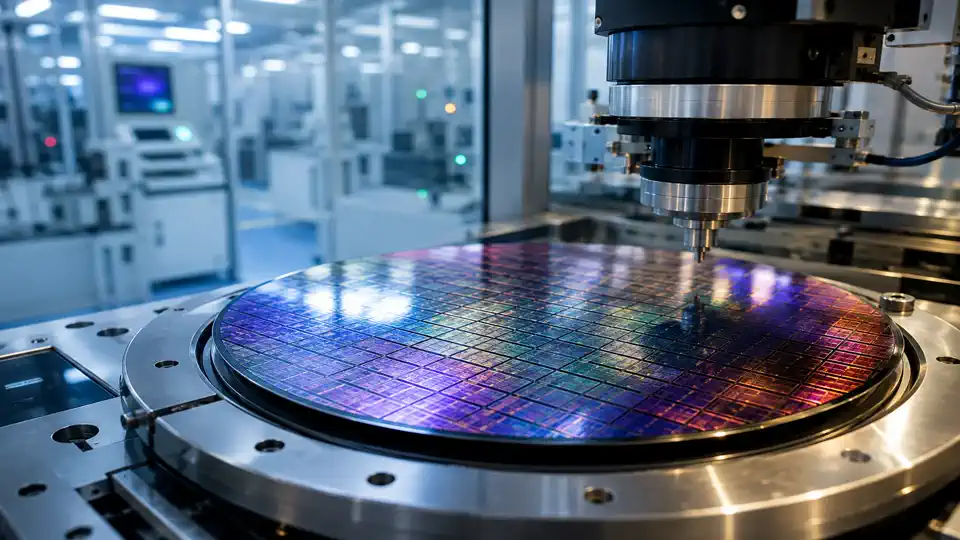
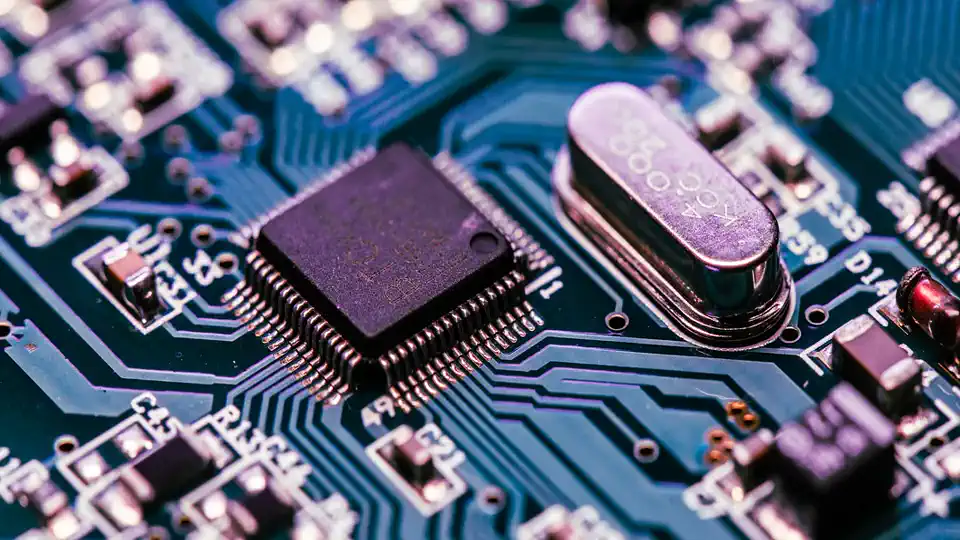

Li Auto bets RMB1.625B on its own silicon: Mahe Xin's 1280-TOPS M100 chip gets a funding round
- Who: Li Auto Inc. (Nasdaq: LI; HKEX: 2015) and its chip subsidiary Shanghai Mahe Xin Technology (MHX Technology); external investors Hangzhou Jingtao, Lanchi Ventures, Huaye Tiancheng and MiraclePlus.
- What: subscription agreements for RMB1.625 billion (~$224M) in new equity for MHX Technology — RMB1.0B from Li Auto, RMB625M from external investors.
- When: announced October 16, 2026; completion subject to customary closing conditions.
- Valuation: full exercise of Hangzhou Jingtao's one-time RMB500M option (by Dec 31, 2026) implies a RMB17.1 billion (~$2.36B) post-investment valuation.
- Control: Li Auto expects to hold ~74.01% of MHX after the round (investors ~6.58%, incentive-plan entities ~19.41%); MHX adopts two share incentive plans.
- The chip: Mahe M100 — 5nm automotive-grade process, 1280 TOPS single-chip compute, 8-channel LPDDR5X at 273 GB/s peak bandwidth; in mass production since May 2026, debut in the Li L9 Livis.
Li Auto announced today that its chip and domain controller subsidiary, Shanghai Mahe Xin Technology (MHX Technology), has signed subscription agreements for RMB1.625 billion (about $224 million) in new equity — the EV maker's first outside funding round for its in-house silicon business.
The deal
Of the RMB1.625 billion, Li Auto itself is putting in RMB1.0 billion through a wholly-owned subsidiary. The remaining RMB625 million comes from external investors: Hangzhou Jingtao, Lanchi Ventures, Huaye Tiancheng and MiraclePlus.
There is more money queued up behind it. Hangzhou Jingtao has been granted a one-time right to invest up to another RMB500 million at the same price before December 31, 2026. If that option is fully exercised, MHX Technology's post-investment valuation reaches RMB17.1 billion (about $2.36 billion). Li Auto retains control either way: assuming the incentive plans are fully utilized and the extra subscription exercised, it expects to hold roughly 74.01% of MHX, with external investors at about 6.58% and share-incentive entities holding the remaining 19.41%. The company says the financing will support research and development and commercialization, and MHX is adopting two share incentive plans to keep its chip engineers.

The chip: Mahe M100
The money backs a real chip that is already shipping. Li Auto began studying in-house silicon in 2021, stood up the project in 2022 with a team of roughly 200, and its self-developed Mahe M100 reached mass production and vehicle integration in May 2026, debuting in the all-new Li L9 Livis.
The specs put it in serious company for driving-intelligence compute: a 5nm automotive-grade process, a dynamic dataflow architecture, 1280 TOPS of single-chip computing power, and 8-channel LPDDR5X memory with 273 GB/s of peak bandwidth. That is the class of silicon needed to run large perception and driving-policy models inside the car, without depending on a third-party compute vendor.

Why it matters
Li Auto is not just funding a chip — it is formalizing MHX Technology as a dedicated platform for chips and domain controllers, with an eye on expanding into non-automotive sectors for economies of scale. The pattern is familiar from the smartphone era: once you own the compute, you own the roadmap.
For the AI industry, the notable part is the direction of travel. The smartest driving systems increasingly run their heaviest models on custom in-vehicle silicon, and Li Auto just raised a quarter-billion dollars' worth of conviction that it should own that silicon itself. Completion of the financing is subject to customary closing conditions.
Frequently asked questions
What is MHX Technology?
Shanghai Mahe Xin Technology is Li Auto's subsidiary dedicated to its chip and domain controller business. Li Auto is formalizing it as a standalone platform, with plans to expand into non-automotive sectors.
How is the RMB1.625 billion split, and what's the implied valuation?
Li Auto invests RMB1.0 billion and external investors — Hangzhou Jingtao, Lanchi Ventures, Huaye Tiancheng and MiraclePlus — invest RMB625 million. Hangzhou Jingtao also gets a one-time option for up to RMB500 million more by December 31, 2026; full exercise implies a RMB17.1 billion (~$2.36B) valuation. Li Auto keeps about 74.01%.
What can the Mahe M100 chip do?
Built on a 5nm automotive-grade process with a dynamic dataflow architecture, the M100 delivers 1280 TOPS of single-chip compute with 8-channel LPDDR5X memory at 273 GB/s peak bandwidth — the class of silicon needed to run heavy perception and driving models inside the car. It entered mass production in May 2026 and debuted in the Li L9 Livis.